今年度在國小中年級小兒子班級，老師辦了一個很有意義的戶外教學活動，有別於低年級的校外教學動物園，遊樂園等比較吃喝玩樂之旅，這次老師安排的校外活動是透過台灣海洋教育推廣協會安排的活動，很幸運有被抽到名額，遊覽車和導覽活動安排老師整日行程全部是協會全額補助。
當天導覽活動講師是在海洋生態界裡非常有名氣的阿吉老師，老師在烈陽下很賣力地把知識帶給孩子們，讓孩子們走出教科書，對沙丘留下深刻的印象。
11/23當天行程安排：
8:00~9:30 搭遊覽車前往草漯沙丘故事館。 9:30~11:00草漯沙丘環境生態解說。 11:15~12:00永安漁港海螺館，認識海洋漁業文化。 12:00~13:00午餐時間。 13:15~14:45 新屋石滬海岸走讀，探尋漁人的智慧。 14:45~15:50 活動結束。
一大早小朋友到學校後，老師整隊到校門口一起拍個紀念的照片，在經過檢查遊覽車確定消防以及車子的結構安全沒問題，隨即開始由中和上國道往桃園觀音草漯沙丘目的地出發，我也和其他參加的家長一起當隨行家長陪伴著孩子們一起度過歡樂又充實的一天。
| 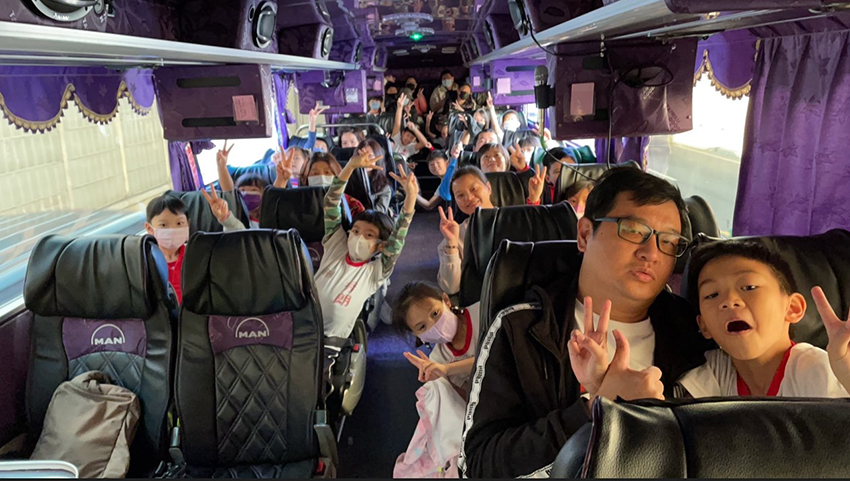 |
到了有著名台版＂薩哈拉沙漠＂之稱的草漯沙丘目的地，導覽活動的阿吉老師開始帶領著大家進行今天的活動，首先映入眼簾的是草漯沙丘與成排發電風車，沿著海濱連成了一線，沙丘起伏蜿蜒與沙紋交錯著，帶出了一種特別的景色。
| 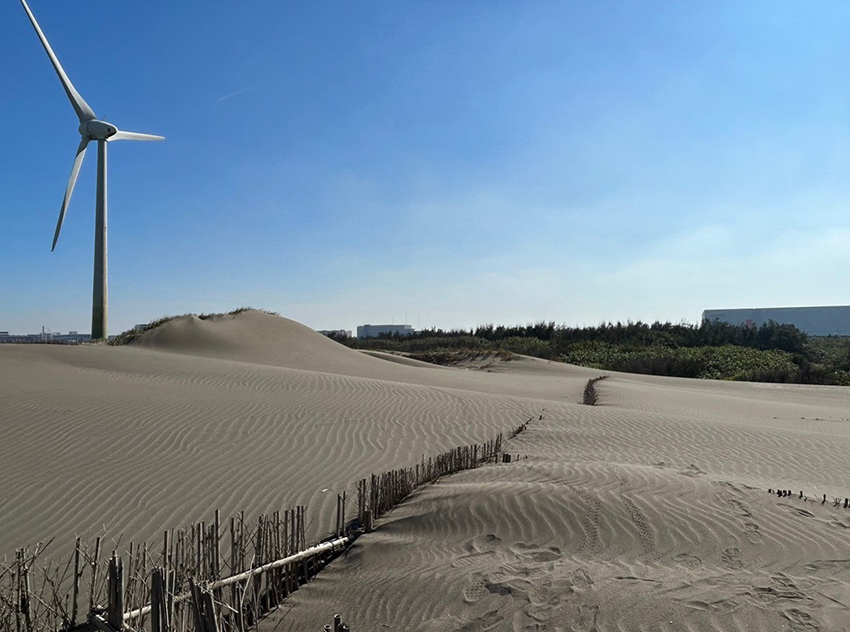 |
| 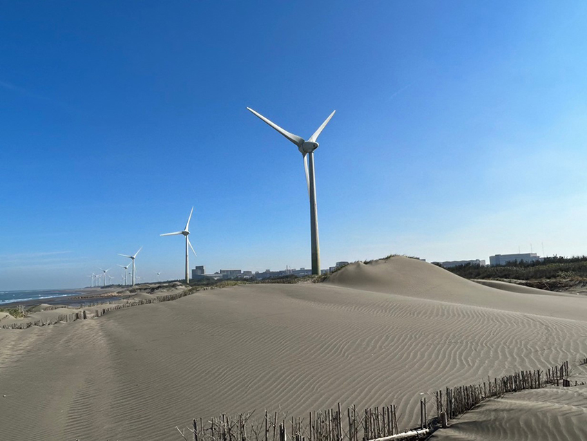 |
因為走在沙丘上一般球鞋不好走，老師在出發前有特別叮嚀大家要穿雨鞋或涼鞋，小孩們看到了沙子與海非常開心，沿路上挖沙，撿貝殼，追著沙蟹，另一邊聽著阿吉老師介紹沙丘的行程歷史解說，一邊聽著一邊玩，小孩們當下玩得不亦樂乎。
| 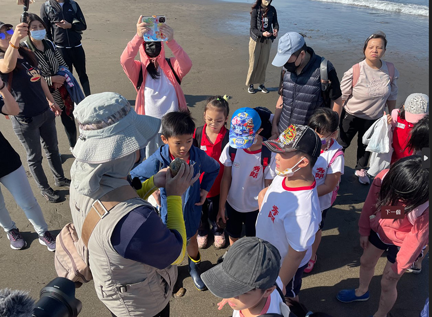 |
| 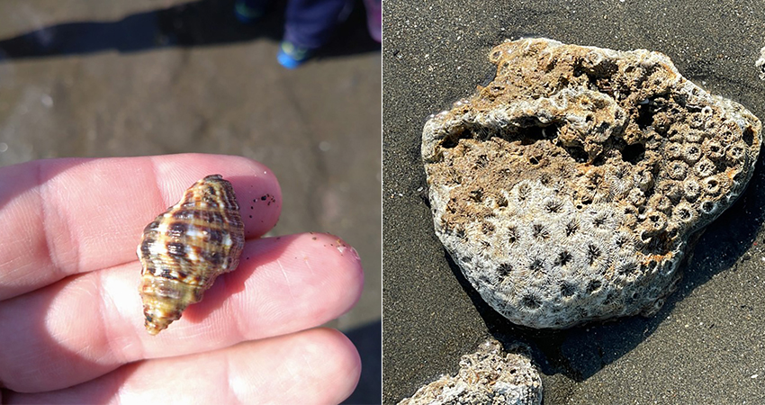 |
走到了一半，在眼前有一座沙丘約有一層樓高左右，想要上去沙丘頂超級不好施力，很容易陷下去沙堆，不好出力，最後小孩們小心翼翼一步接一步緩緩地努力完成登上沙丘頂的任務，霎那間小孩們非常興奮並露出無比開心的笑容。
| 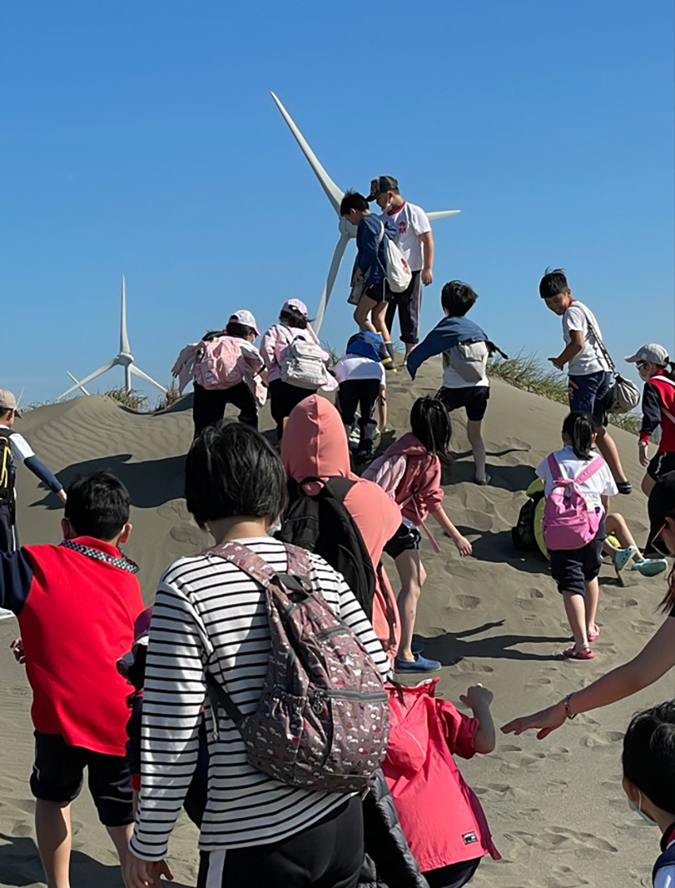 |
| 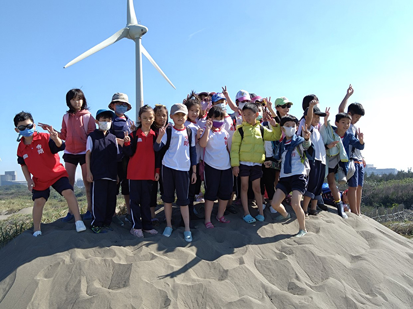 |
登頂之後約莫10點多，大家就先集合把腳上的沙子用清水沖洗乾淨，老師給了小朋友們20分鐘吃零食活動時間，大家吃吃喝喝一會兒之後，阿吉老師接著帶領了大家到沙丘故事館，一進館內就能看到沙丘視覺模型，可以清楚一覽桃園海岸線的沙丘美景，館內有七大主題：
1. 沙丘主視覺模型 2. 大事記 3. 動／植物介紹知識牆 4. 沙丘地形學 5. 用數字看沙世界 6. 台灣地質公園分布介紹 7. 海洋生物保育展，
我們跟著導覽阿吉老師的解說，慢慢對於自己家園的沙丘有著更深一層的認識，小朋友們在展覽館也是相當的專注每個展覽介紹。
| 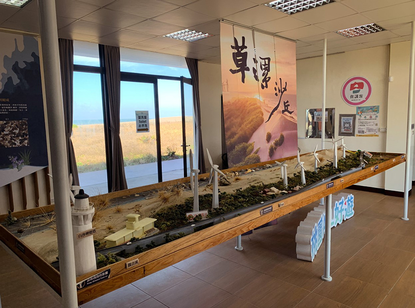 |
| 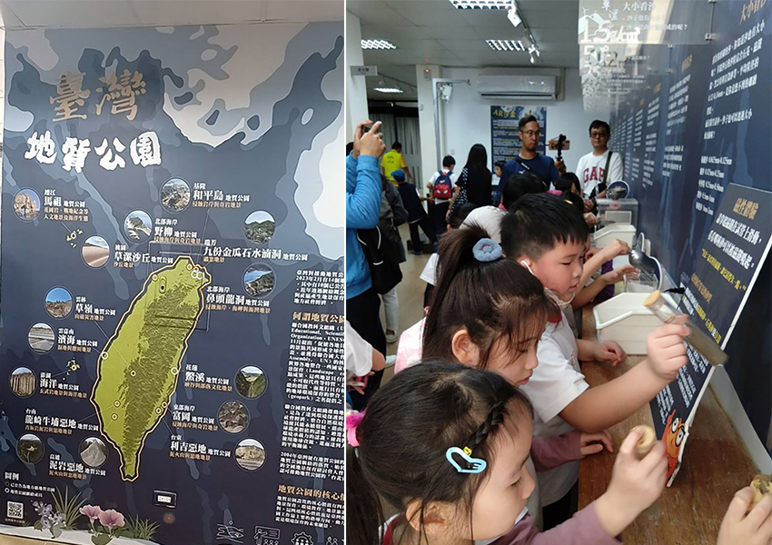 |
到了快中午的時間，我們又坐著遊覽車前往永安漁港，抵達了漁港之後，由於11月份剛好永安漁港休館整修中，導覽阿吉老師帶領大家到附近的涼亭用餐，一邊解說著永安漁港的外型建築外觀的意象是一隻龍蝦的造型。
| 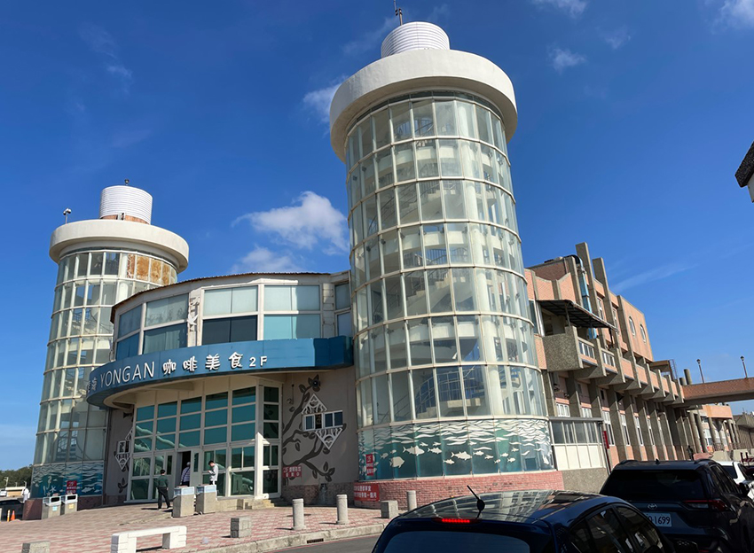 |
每位爸爸媽媽幫小孩準備的午餐都各有特色，有飯糰，麵包，壽司之類的午餐，中間也發生一段小插曲，有一位小朋友迷糊忘了帶午餐和零食出門，這時候班級的同學就發揮同學的愛心，大家各自分一些給沒有帶的小朋友吃，當然到了漁港周邊都會有來自不同風味特色的攤販市集叫賣烤魷魚、烤鳥蛋、蚵仔包、烤香腸之類的傳統小吃，我也買些小吃給小朋友吃吃喝喝，在漁港吃海鮮小吃，吹吹海風的午餐別有一番風味。
中午休息完之後，導覽老師接著帶我們到海螺館參觀，海螺館的外型以海螺為造型，象徵客家捕魚”吹海螺”的意義，內部設置文化展覽的空間，結合海洋客家產業及周邊的客家聚落，廟宇等設施，同時也結合了很多早期漁業用品的介紹。
| 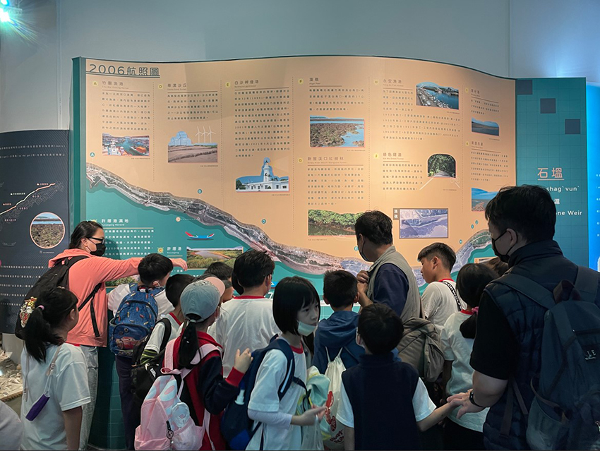 |
| 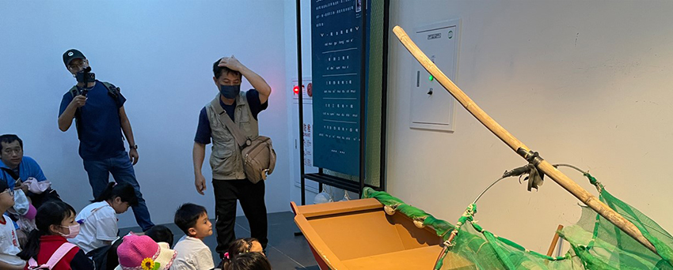 |
由於這次行程緊湊的關係，原本下午的活動石滬走讀的部分，因時間來不及，改去後方的海岸線認識當地生態美景，同時也在跨海橋上拍了一張大合照。
| 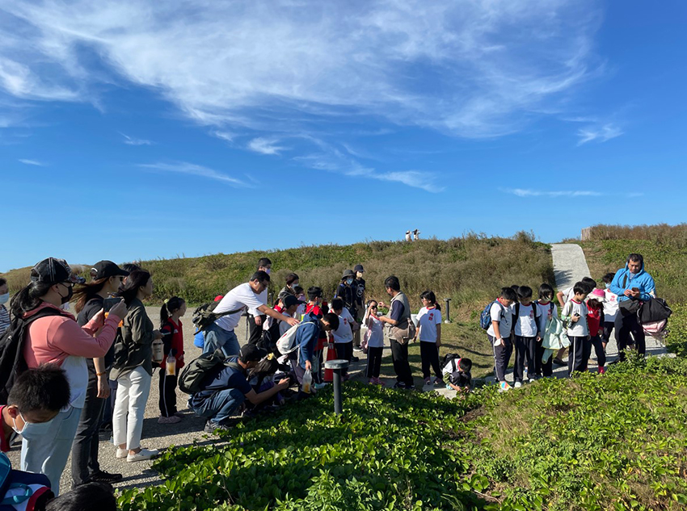 |
| 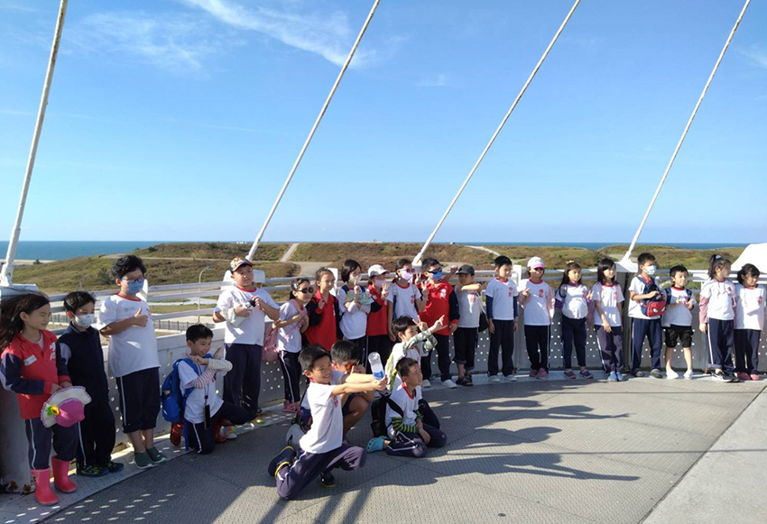 |
拍完了照，小朋友們走了一天也都累了，也到了該回家的時間，上了遊覽車有一半的學生很快的進入甜蜜夢鄉，沒有睡的小朋友，就看著遊覽車司機大哥播放的卡通動畫影片，在歡樂中結束了今天有意義而且很特別的校外教學活動旅程。